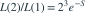

独立同分布于速率为 的指数分布。检验 对 。令 。显著性水平为 0.05 的最强检验拒绝域具有哪种形式？
独立同分布于速率为 的指数分布。检验 对 。令 。显著性水平为 0.05 的最强检验拒绝域具有哪种形式？- AS 大于其原假设分布的 0.95 分位数
- BS 落在以原假设均值为中心的窄区间内
- CS 小于其备择分布的 0.05 分位数
- DS 小于其原假设分布的 0.05 分位数
我已思考，展开答案与解析
正确答案：D
- 似然比

随 S 严格递减。N-P 引理要求在该比值较大时拒绝。 - 所以拒绝域为 ；临界值必须满足 。
易错提醒速率越大，指数变量越小；校准第一类错误必须使用原假设分布。
原模拟卷 A · 模拟卷 A 第 38 题
原创